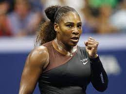

The US Open is one of the four Grand Slam tennis tournaments held annually, along with the Australian Open, French Open, and Wimbledon. It is held in Flushing Meadows, New York, and attracts the world's top tennis players. The tournament was first held in 1881 and is known for its fast hard courts, which produce high-speed matches. The US Open features five main event categories: men's and women's singles, men's and women's doubles, and mixed doubles. In recent years, the tournament has also introduced wheelchair and junior events. The US Open is typically held over two weeks in late August and early September and is the final major tennis tournament of the year.
Some Information You Might Find Usefull!
Roger Federer

Roger Federer is a Swiss professional tennis player and has won the US Open five times, in addition to his record 20 Grand Slam singles titles. Federer is known for his graceful playing style, his versatile shot-making ability, and his exceptional sportsmanship. He has been ranked world No. 1 in men's singles tennis by the Association of Tennis Professionals (ATP) a record total of 310 weeks, and is widely regarded as one of the greatest tennis players of all time.
Serena Williams
Serena Williams is an American professional tennis player who has won the US Open six times, in addition to her 23 Grand Slam singles titles. Williams is known for her powerful serve, aggressive playing style, and mental toughness. She has been ranked world No. 1 in women's singles tennis by the Women's Tennis Association (WTA) eight times, and has won numerous awards for her achievements both on and off the court, including four Olympic gold medals.
Check Out this Video!
One interesting fact about the US Open is that it was the first Grand Slam tennis tournament to award equal prize money to both men and women. In 1973, the US Open became the first major tennis tournament to offer equal prize money to both male and female players, marking a significant moment for gender equality in sports. This move paved the way for other Grand Slam tournaments to follow suit and provide equal pay for both men and women
...Or This One
Check out these Photos of the Us Open